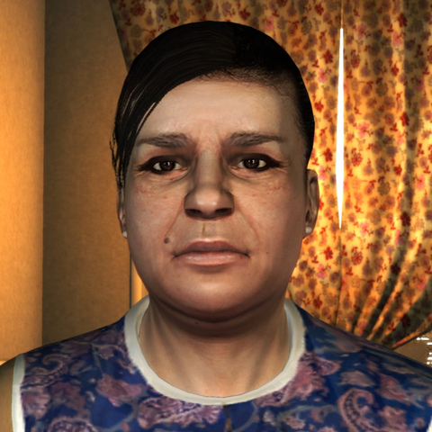
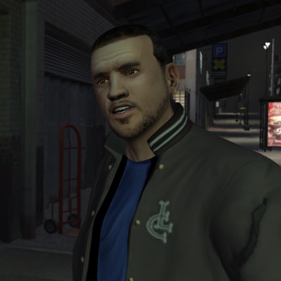
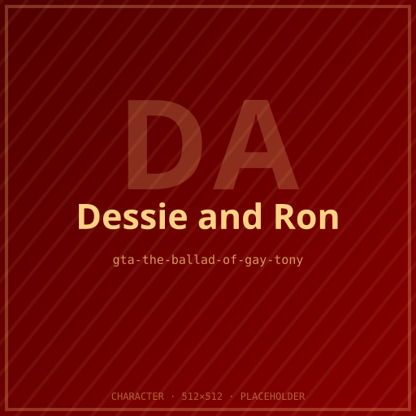
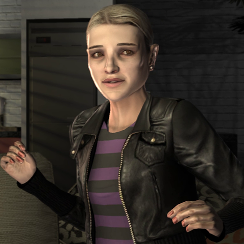
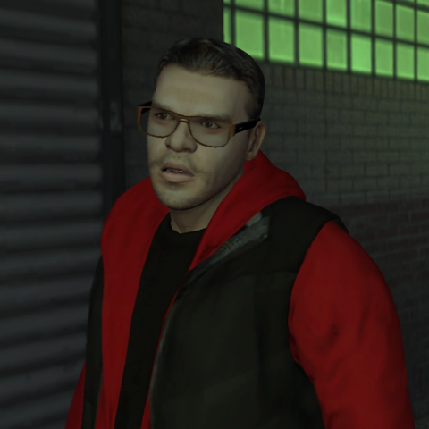
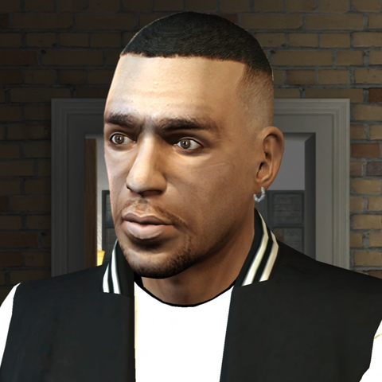
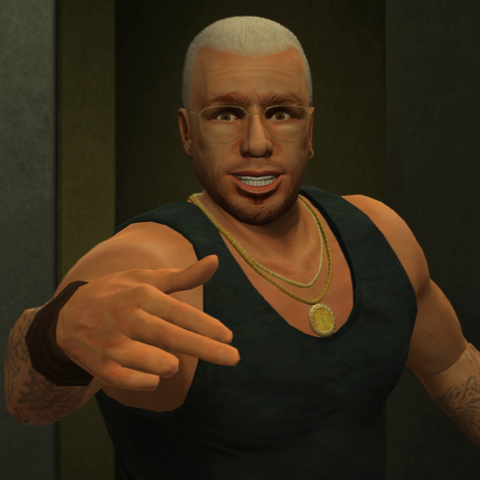
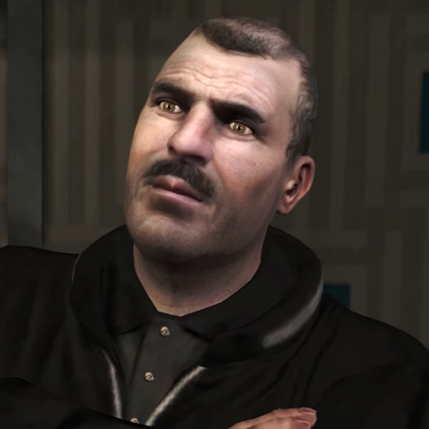
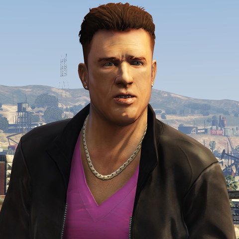
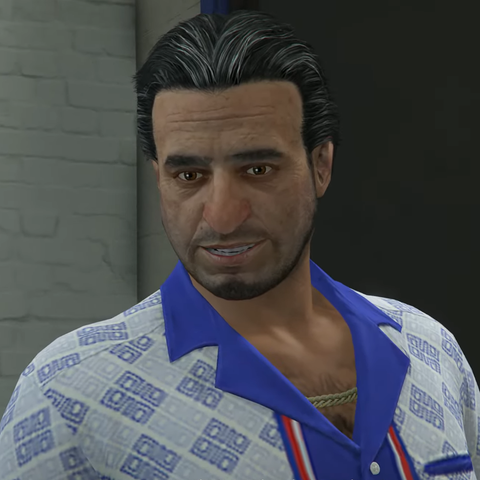

TBoGT
Characters

Adriana Yanira Lopez
Armando Torres Brucie Kibbutz
Brucie Kibbutz
Dessie and Ron
Gracie Ancelotti
Henrique Bardas
Luis Fernando Lopez
Mori Kibbutz
Ray Bulgarin
Rocco Pelosi Tony 'Gay Tony' Prince
Tony 'Gay Tony' Prince
Yusuf Amir
| Image | Name | Role | Affiliations | Status |
|---|---|---|---|---|
| Adriana Yanira Lopez | Luis's mother | Lopez family | Alive | |
| Armando Torres | Friend | Luis's crew | Alive | |
| Brucie Kibbutz | Ally | Kibbutz Motors | Alive |
| Dessie and Ron | Club staff | Maisonette 9 | Alive | |
| Gracie Ancelotti | Kidnap target | Ancelotti family | Alive | |
| Henrique Bardas | Friend | Luis's crew | Alive | |
| Luis Fernando Lopez | Protagonist | Maisonette 9, Ancelotti family (associate) | Alive | |
| Mori Kibbutz | Rival | Kibbutz family | Alive | |
| Ray Bulgarin | Antagonist | Bulgarin organization | Varies | |
| Rocco Pelosi | Antagonist | Ancelotti family | Alive | |
| Tony 'Gay Tony' Prince | Club owner, ally | Maisonette 9, Hercules | Alive |
| Yusuf Amir | Ally, developer | Amir Developments | Alive |